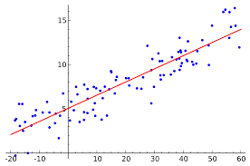
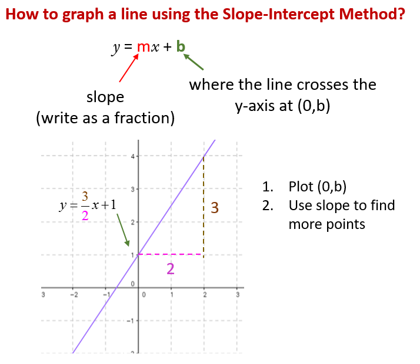

Keyboard shortcuts:
N/СпейсNext Slide
PPrevious Slide
OSlides Overview
ctrl+left clickZoom Element
If you want print version => add '
?print-pdf' at the end of slides URL (remove '#' fragment) and then print.
Like: https://wwwcourses.github.io/...CourseIntro.html?print-pdf
Linear models for classification and regression with scikit-learn
Created for

Iva E. Popova, 2024,

Regression Models in Machine Learning.
Overview
- Regression analysis is a form of predictive modeling technique which investigates the relationship between a dependent (target) $y$ and independent (predictor) variables $X$.
- I.e. it fits a line (or curve) to the data points, such that the differences between the distances of data points from the line/curve is minimized.
$$ {g:X\to y} $$
Types of regression techniques
We classify them by
- Number of independent variables
- Simple Regression
- Multiple Regression
- Shape of the regression line
- Linear Regression
- Non-linear regression (like Polynomial regression)
- The type of the dependent variable (continuous or binary(categorical))
- Linear regression
- Logistic regression
Why the term "Regression"
- According to Conspiracy theories:
- Blame ICSSNN (The International Committee for Sadistic Statistical Nomenclature and Numerophobia) üòâ
- The reality:
- Galton, F. "Regression towards Mediocrity in Hereditary Stature.", 1886
- Reference: So Why Is It Called "Regression," Anyway?
Linear Regression
Linear Regression
Overview
- Linear regression is used to model and predict continuous outcomes.
- It's a predictive model to predict future values $Y$ of $X_i$, using a linear equation
- It is based on the idea of finding a line that best fits the data, so that we can make predictions for new data points. 
- Do not confuse it with logistic regression, which is used to model binary outcomes (i.e. it concerns classification tasks)
{kind=link}
Formal definition
- Linear Regression is a method to model the relationship between a set of independent variables $X$ (also known as features) and a dependent variable $y$.
- This method assumes the relationship between each feature $X$ is linearly related to the dependent variable $y$.
$$ y = \beta_0 + \beta_1 X + \epsilon$$
- where $\epsilon$ is considered as an unobservable random variable that adds noise to the linear relationship.
- $\beta_0$ is the intercept of the linear model
- $\beta 1$ is the co-efficient of the model (the slope of the line)
- This is the simplest form of linear regression (i.e. with one variable).
Slope-intercept form
- Slope-intercept form is a way to write the equation of a line, following this structure:
${y=mx+b}$ - In this equation, slope=$m$, intercept=$b$
- Note that in statistics, the notation is: slope=$\beta_1$, intercept=$\beta_0$, or $y={\beta_1}x+\beta_0$
- Slope is a measure of a line's steepness. It can be found by calculating the change in y over the change in x.
- The y-intercept is the point where the line crosses the y-axis. It is the ordered pair (0,b).
- For example, the line ${y=3/2x+1}$ has a slope of ${3/2}$ and a y-intercept of 1. That line is graphed below. 
{kind=link}
The general prediction formula for a linear model
- $ X_1 ... X_p$ are the $p$ features used in the model
- The estimated values are represented with a "hat" on top of the letter
- $\hat{\beta}_0 ... \hat{\beta}_p$ are the model parameters that are learned.
- $\hat{\beta_0}$ is the intercept of the linear model
- $\hat{\beta_1} ... \hat{\beta_p}$ are the co-efficients of the model
- $\hat{y}$ is the prediction that model makes
- Once you estimate the parameters $\hat{\beta}_0$ ... $\hat{\beta}_p$, you can use these to predict new values of $Y$
From: $ y = \beta_0 + \beta_1 X_1 + \ldots + \beta_p X_p + \epsilon $
Find: $ \hat{y} = \hat{\beta}_0 + \hat{\beta}_1 X_1 + \ldots + \hat{\beta}_p X_p $
Simple vs Multiple Linear Regression
- When $p$ = 1, we have the equation for a line.
- Simple Linear Regression
- When $p$ >= 2, we have the equation for plane/hyperplane
- Multiple linear regression
$ \hat{y} = \hat{\beta}_0 + \hat{\beta}_1 X_1 + \ldots + \hat{\beta}_p X_p $
Estimate the coefficients (fit the model)
- Find the best fitting straight line through a set of points
- How do we calculate the error (also known as the residual) for each point?
- Two main ways: Standard Least Squares (discussed next) or Orthogonal Distance (presented in the picture)

Least Squares Regression Method
Least Squares Regression Method
Overview
- Least Squares regression is a method to find the least-squares regression line (i.e. the line of best fit) for a set of data. That line should minimizes the sum of the residuals, or errors, squared.
- Finding the best estimates of the coefficients is often called “fitting” the model to the data, or sometimes “learning” or “training” the model.
- The Least Squares Method estimates $\beta_0$ and $\beta_1$, that minimize the sum of the squared residuals $r_i = y_i - (\beta_0 + \beta_1 x_i)$ in the model. I.e. it makes the difference between the observed $y_i$ and linear model $\beta_0 + \beta_1 x_i$ as small as possible.
- where $N$ is the number of observations.
- The above given formula is for simple regression. For multiple regression the formula is:

$$ S = \sum_{i=1}^N r_i^2 = \sum_{i=1}^N (y_i - (\beta_0 + \beta_1 x_i))^2 $$
$$\sum_{i=1}^N r_i^2 = \sum_{i=1}^N (y_i - (\beta_{0} + \beta_{1} x_{1,i} + \beta_{2} x_{2,i} + \cdots + \beta_{k} x_{k,i}))^2.$$
Calculus
- To calculate the line coefficients for regression line ($\hat{y}=mx+b$) we make the assumption that the line will pass through the point ($\bar{x},\bar{y}$), and we can use:
1. $m=r.\frac{S_y}{S_x}$,
2. $b=\bar{y}-\bar{x}m$,
where $r$ is the correlation coefficient of the dataset, and $S_x$, $S_y$ is the sample standard deviation of x and y - Explanation:
{kind=link}
LSRM Calculation - Hands on
- The steps and explanations are given in next Jupyter Notebook: LSRM_DeepExplanations.ipynb